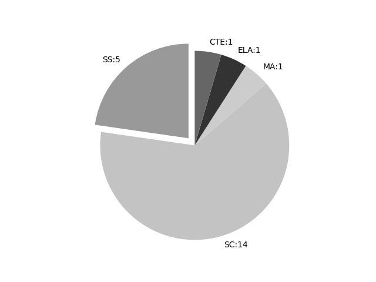

West Virginia
Report date: 2021-07-08
The frequency of all keywords found in this state's standards: 22
Comparable state score: 1.13 (median: .303, SD: .324)
The frequency above is the sum of all keywords found in all of this state's four core academic standards and the state's CTE/career standards. This total count is broken down by keyword and discipline area below.
On this site, 'comparable scores' are calculated as: keywords found divided by total words in the standards document(s) - multiplied by 100,000. The comparable scores attempt to normalize data, accounting for very different sizes of curriculum guidance documentation.
Frequencies by keyword or phrase:- spatial: 7
- Geographic Information System: 4
- geospatial: 5
- GIS: 5

Frequencies by discipline area: - SS: 5
(Comp: 2.094) - SC: 14
(Comp: 4.119) - MA: 1
(Comp: 0.136) - ELA: 1
(Comp: 0.231) - CTE: 1
(Comp: 0.498)
External support files:
Examples of keyword use by discipline area (and document): - ELA
- 68-17201-412020-07-09-10-15-21-499-2020-07-09-12-43-14-704.pdf, page:35, position:1170
heard, and wondered).ELA.3.41Acquire and accurately use grade-appropriate conversational, general academic, and domain-speciÞc words and phrases, including those that signal spatial and transitionalrelationships.English Language
- MA
- MA_68-10009-412015-12-17-17-52-03-358-2015-12-18-13-11-29-050.pdf, page:206, position:499
Modeling include the analysis of information using statistical methods and probability, modeling change and mathematical relationships, mathematical decision making in Þnance, and spatial and geometric modeling fordecision-making. St
- SC
- SC_126-044CC-2015-05-15-15-42-29-877.pdf, page:35, position:764
planetary surfaces to construct an account of EarthÕs formation and early history.S.9.ESS.7develop a model to illustrate how EarthÕs internal and surface processes operate at different spatial and temporal scales to form continental and o - SC_126-044CC-2015-05-15-15-42-29-877.pdf, page:70, position:15
- 68-16955-412019-01-10-14-01-16-521-2019-01-11-13-09-40-613.pdf, page:17, position:2028
credit course and must be taught by a certiÞed 9-12 math teacher.High School: Computer Science - Introduction to Geographic Information SystemsComputer Science Ð Introduction to Geographic Information Systems may be counted as a third science elective c - 68-16955-412019-01-10-14-01-16-521-2019-01-11-13-09-40-613.pdf, page:28, position:1705
a basic proÞciency in map reading; an understanding of scale; an understanding of the power of analysis; and an understanding of the history of mapcreation and use.CS.GIS.3Analyze GIS data to identify spatial relationships or disp - 68-16955-412019-01-10-14-01-16-521-2019-01-11-13-09-40-613.pdf, page:28, position:1226
of a disease; or be used by a company to site a new business location. Ultimately, geospatial technology helps you answer questions and solve problems.Computer Science Ð Introduction to Geographic Information Systems may be counted as a third science elective cr - 68-16955-412019-01-10-14-01-16-521-2019-01-11-13-09-40-613.pdf, page:28, position:545
include geographic information systems (GIS), global positioning systems (GPS), basic remote sensing, geo-visualization and interpretation, Internet mapping, and spatial statistics. Explores how geospatial technologies and tools are used in data collecti - 68-16955-412019-01-10-14-01-16-521-2019-01-11-13-09-40-613.pdf, page:28, position:510
analysis. Technologies employed include geographic information systems (GIS), global positioning systems (GPS), basic remote sensing, geo-visualization and interpretation, Internet mapping, and spatial statistics. Explores how geospatial technologies - 68-16955-412019-01-10-14-01-16-521-2019-01-11-13-09-40-613.pdf, page:28, position:354
Science - Introduction to Geographic Information SystemsIntroduces fundamental concepts of geographic map interpretation, creation and analysis. Technologies employed include geographic information systems (GIS), global positioning systems (GPS), basic - 68-16955-412019-01-10-14-01-16-521-2019-01-11-13-09-40-613.pdf, page:28, position:916
to think spatially, analytically, and critically; 2) to help students become better problem solvers; and 3) to teach students the fundamentals of Geographic Information Science and Technology. Geospatial technology might be used to Þnd wetlands that n - 68-16955-412019-01-10-14-01-16-521-2019-01-11-13-09-40-613.pdf, page:28, position:385
to Geographic Information SystemsIntroduces fundamental concepts of geographic map interpretation, creation and analysis. Technologies employed include geographic information systems (GIS), global positioning systems (GPS), basic remote - 68-16955-412019-01-10-14-01-16-521-2019-01-11-13-09-40-613.pdf, page:29, position:219
Internet-based map product (story map application or web application) that describes a solution for mitigating a human impact on the environment using studentscollected and generated GIS data.CS.GIS.7Use a GPS-enabled data collection - 68-16955-412019-01-10-14-01-16-521-2019-01-11-13-09-40-613.pdf, page:29, position:931
basic proÞciency in map creation, including adding layers, addingadditional data, changing data symbology, conÞguring pop-up, saving and sharing maps.CS.GIS.11Use geospatial technology to explore and investigate environ - 68-16955-412019-01-10-14-01-16-521-2019-01-11-13-09-40-613.pdf, page:30, position:497
geospatial technology to explore and investigate the history of cartography.CS.GIS.20Demonstrate an awareness of the ethical and social implications of the use of GIS and GPS system, including system reliability, - 68-16955-412019-01-10-14-01-16-521-2019-01-11-13-09-40-613.pdf, page:30, position:322
layercreation in an online mapping system.CS.GIS.18Collect GPS data using a GPS unit, compile it into a .cvs Þle, and add it to a saved web map.Impacts of ComputingCS.GIS.19Use geospatial technology to explore and investigate the his
- SS
- SS_126-044D-2016-09-06-16-42-07-390.pdf, page:7, position:1961
in American government and society. They will be asked to investigate, examine and draw conclusions regarding exchange and choice in the economy. Students will become more independent in using geographic information systems and - SS_126-044D-2016-09-06-16-42-07-390.pdf, page:23, position:47
- SS_126-044D-2016-09-06-16-42-07-390.pdf, page:39, position:4
- SS_126-044D-2016-09-06-16-42-07-390.pdf, page:39, position:88
- SS_126-044D-2016-09-06-16-42-07-390.pdf, page:77, position:551
use and construct maps, globes and other geographic tools to locate and derive information about personal directions, people, places and environments (TheWorld in Spatial Terms).SS.G.2Describe the physical and human
{kind=link}